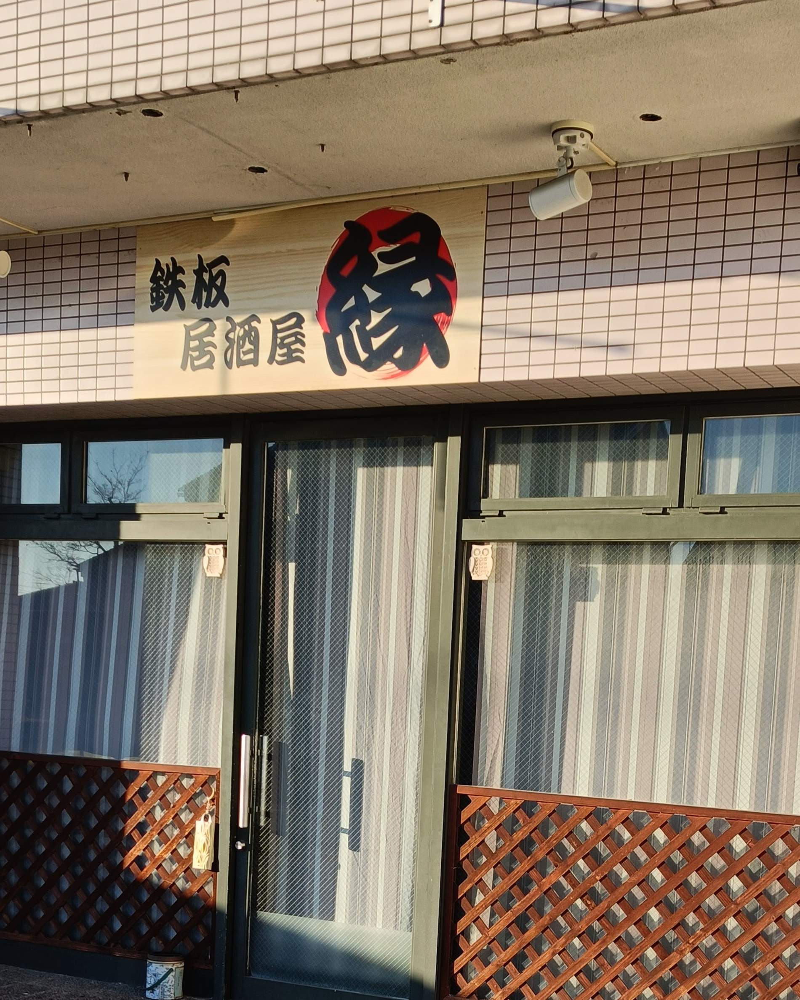
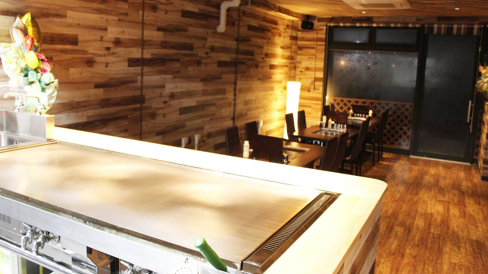
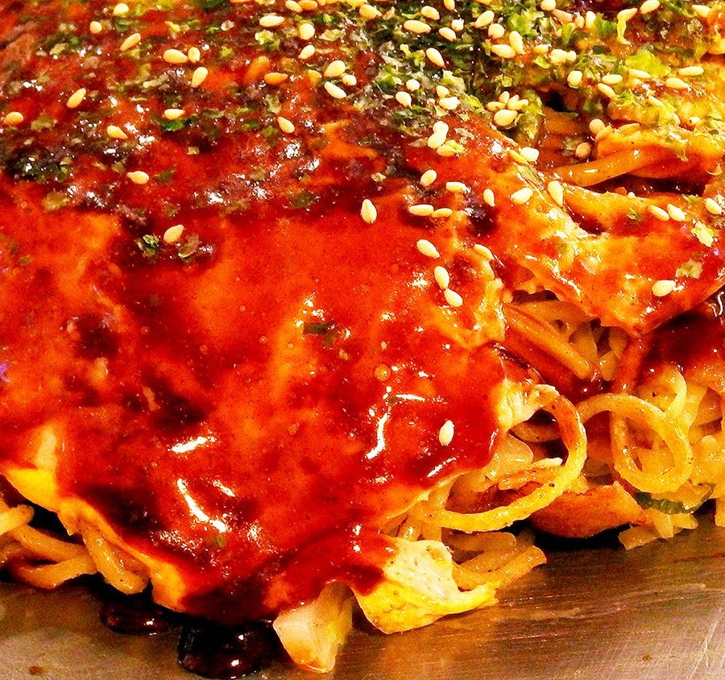
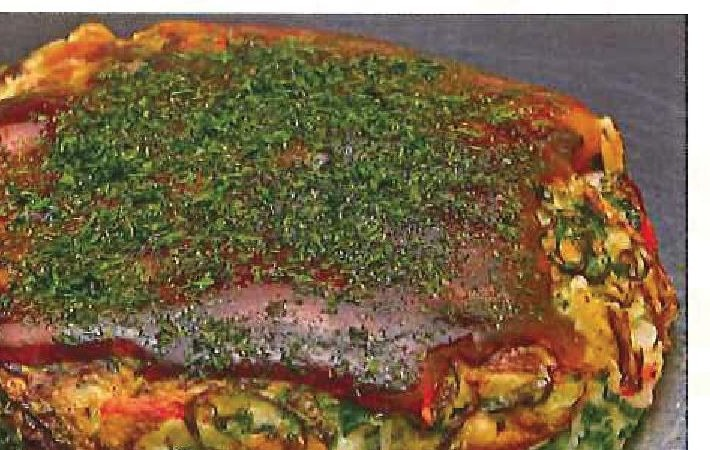
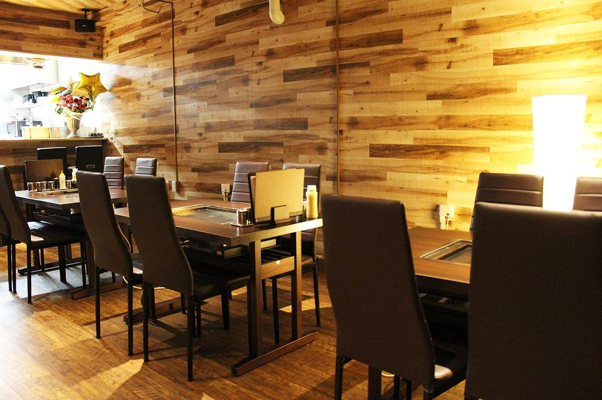
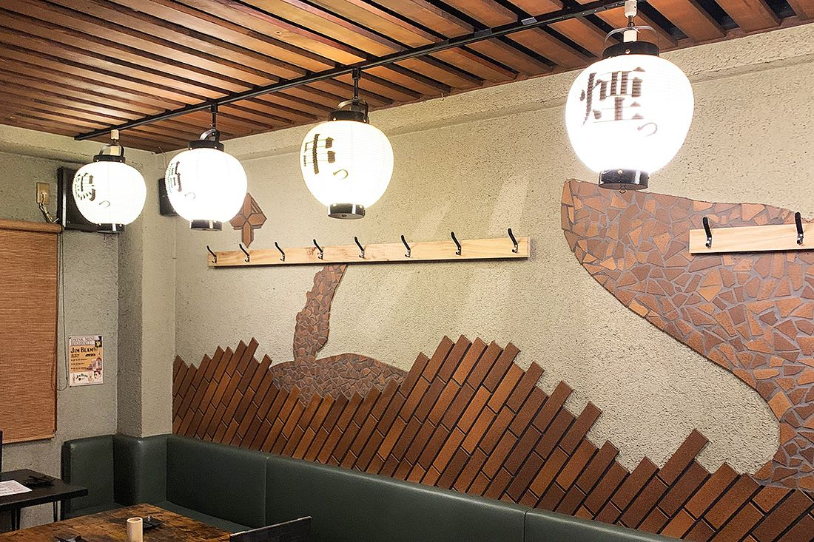
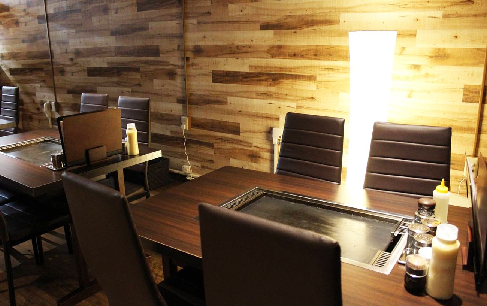
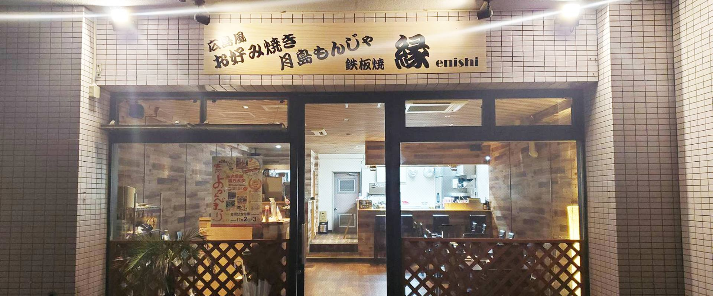

肉も、海鮮も、お好み焼きも。ぜんぶ、鉄板から。

古河駅東口 徒歩5分。奥の鉄板から、熱いままお席へ。 2019年の開業から、古河の夜に鉄板の火を入れております。広島風お好み焼きに月島もんじゃ、肉や海鮮のおつまみを肴に、翌3時まで。お仕事帰りの一杯にも、宴のあとのもう一軒にも。
ご注文の品はすべて、店主が奥の鉄板で焼き上げ、熱いまま席へお運びいたします。ヘラを握っていただく必要はございません。広島風お好み焼きは、麺がうどんかそば、味はソース・醤油・塩ダレ。六通りからお選びいただけます。

お席にも鉄板を据えておりますが、焼いていただくためのものではございません。奥から届いた料理を、音を立てたまま、最後のひと口まで熱いまま受けるためのものです。焼き上がりを待つあいだには、すぐお出しできるスピードメニューやおつまみを数多くご用意しております。

当店のお好み焼きは、すべて広島風です。中に麺が入っており、キャベツの甘みと麺の食べごたえをひと切れでお楽しみいただけます。えにしスペシャルから定番の肉玉まで、皆さまで切り分けて、味の違いをお試しください。
東京・月島のローカルフード、もんじゃ焼き。定番から変わり種まで、20種類以上をご用意しております。迷われたら『ベーコントマトチーズもんじゃ』をどうぞ。

小麦粉を一切使わない、グルテンフリーのねぎ焼きです。甘みの強い広島産宝島ネギに、すりおろした山芋と大和芋を合わせて、ふわふわに焼き上げます。ねぎ以外の具はほとんど入れません。ねぎそのものの風味を味わっていただく一枚です。
鉄板のおつまみは、肉・野菜・海鮮。ちりとり鍋に激辛メニュー、一品料理、サラダ、デザートまでご用意しております。どのメニューにも、辛さのトッピングを承ります。お酒はビール、ハイボール、サワー、焼酎、カクテルなど。
もんじゃ食べ放題もございます。ご利用は下記の条件にて承ります。
定番もんじゃ 1,980円／全てのもんじゃ 2,480円。
お値段は店内のお品書きに掲げております。お電話（0280-23-5077）でもお答えいたします。

歓送迎会や二次会、同窓会など、ご宴会のコースを承っております。内容とお値段は、お電話でお尋ねください。20名様からは、店舗の貸切にも対応いたします。


誰でも気軽に鉄板焼きを食べられる店にしたい――その思いで、この店をつくりました。席は28席、カウンター席とテーブル席をご用意しております（個室はございません）。お一人様でも団体様でも、鉄板焼きをおつまみに一杯という方も、お食事だけの方も、お気軽にお立ち寄りください。
「鉄板料理は全て作ってくれて、目の前の鉄板に供給され常に熱々の状態でお酒も進みました！味もとってもうまいです！」
食べログのクチコミより
「広島のお好み焼き好きな人におすすめ！他のつまみとかサイドメニューも最高にうまい！」
食べログのクチコミより
「オシャレな店内。お店の説明にもあったように、本当にスタイリッシュでオシャレな店内でした。提供してくださったメニューも美味しくておすすめです。店員さんの対応もすごく爽やかで元気があり、また来たいなって思えるようなお店でした。」
エキテンのクチコミより

JR古河駅 東口から徒歩5分ほどです。営業は18時から翌3時まで、水曜日が定休日です。お車の方には、6台ぶんの駐車場がございます。お支払いはクレジットカード（VISA・Master・JCB・AMEX・Diners）をお使いいただけます。電子マネー・QRコード決済はご利用いただけません。ご予約はお電話で承ります。
| 住所 | 〒306-0013 茨城県古河市東本町1-18-25 ルーブルタワーズ101 |
|---|---|
| 電話 | 0280-23-5077 |
| 営業時間 | 18:00〜翌3:00 |
| 定休日 | 水曜日 |
| 席数 | 28席（カウンター席・テーブル席／個室なし） |
| 駐車場 | 6台 |
| お支払い | クレジットカード（VISA・Master・JCB・AMEX・Diners）※電子マネー・QRコード決済は不可 |
お越しの前に、お電話で営業時間をお確かめくださいませ。
古河駅の東口から、歩いて5分。街なかの明かりのひとつとして、今夜も鉄板を熱しております。